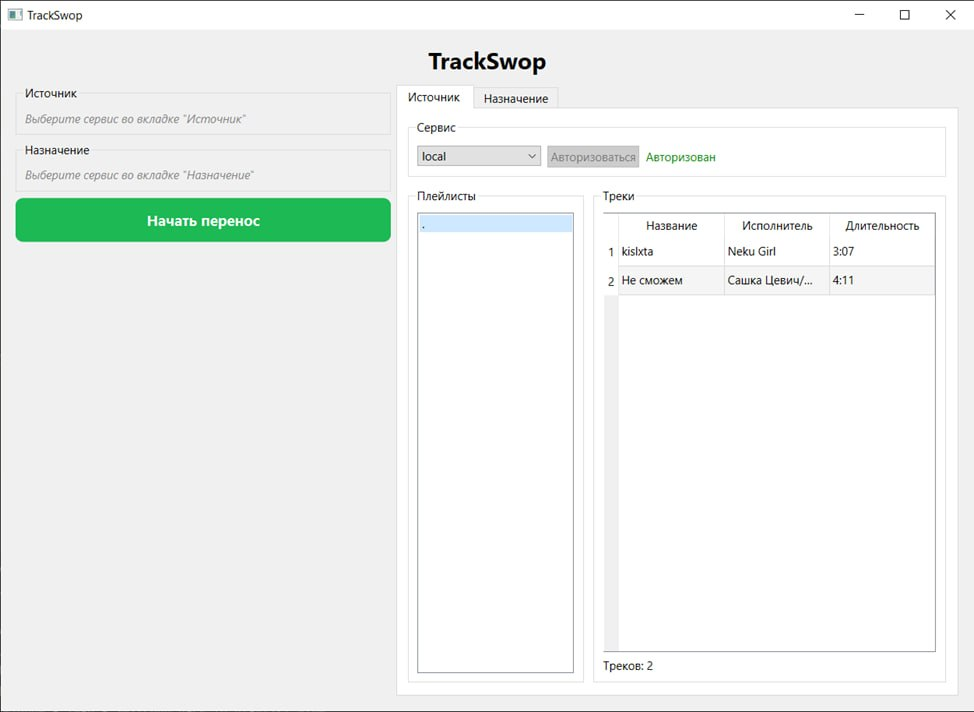
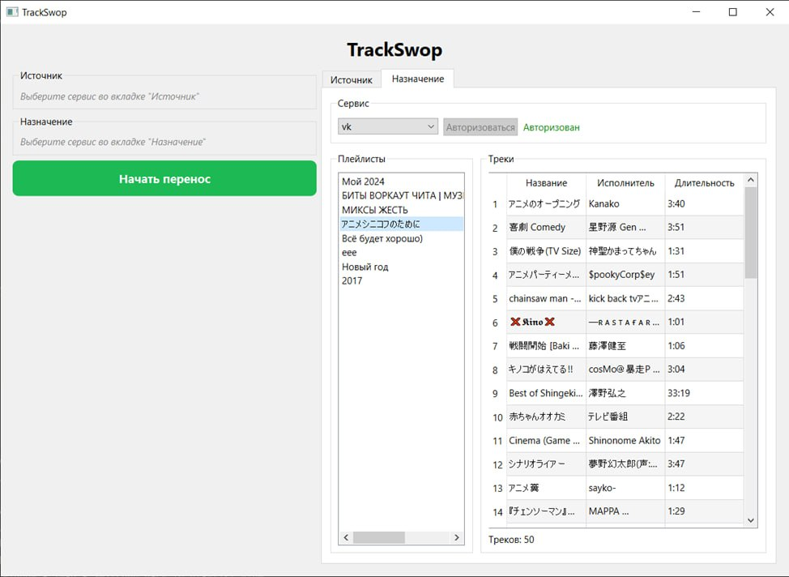
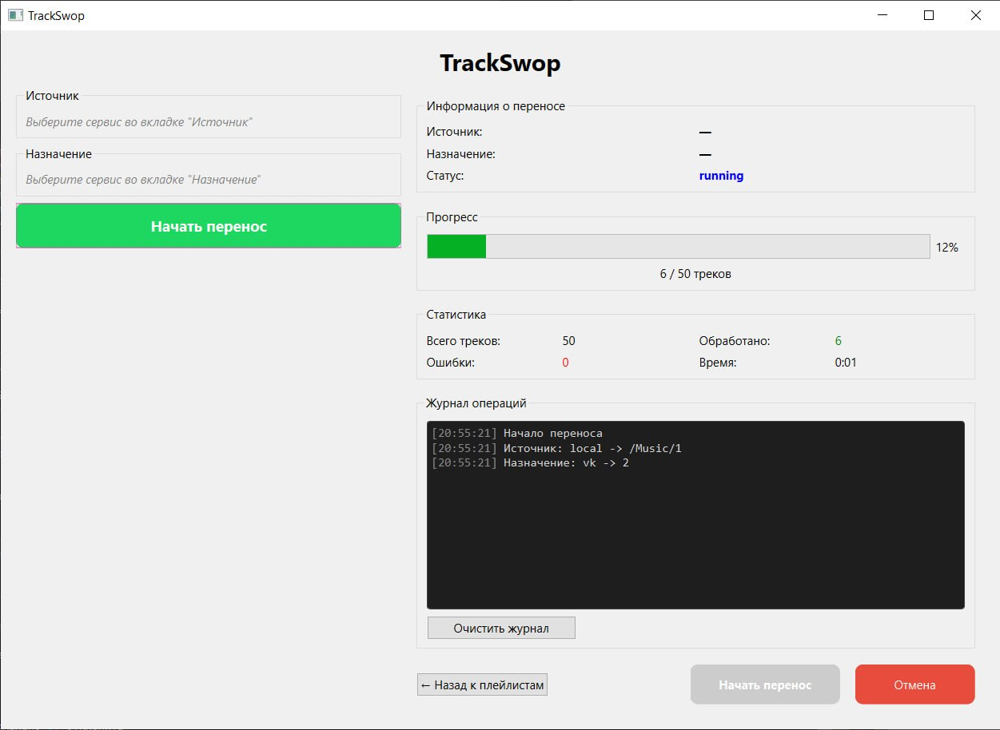
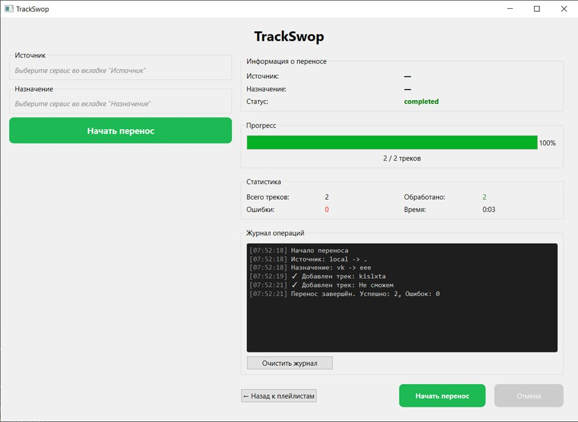
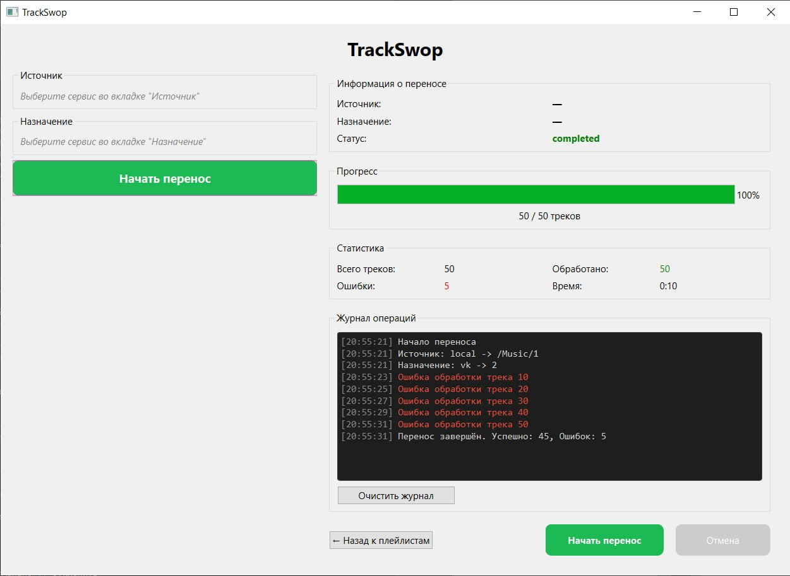

Проект по дисциплине «Проектная деятельность»
TrackSwop переносит плейлисты между музыкальными сервисами через единый интерфейс
Проект объединяет Spotify, VK Music и локальные файлы в одну модульную систему. Основной акцент сделан на provider-based архитектуре, безопасном хранении токенов, динамических формах настройки и удобном desktop-интерфейсе на PySide6.
Платформы разрознены
Перенос плейлистов между сервисами обычно требует отдельных сценариев и ручной синхронизации.
Единый слой интеграции
TrackSwop абстрагирует API провайдеров и даёт единый интерфейс для плейлистов, треков и операций импорта/экспорта.
Готовая основа для роста
Реализованы базовая архитектура, Spotify, TokenStore и тесты; дополнительные провайдеры и UI-улучшения развиваются дальше.
О проекте
TrackSwop — десктопное приложение для миграции и управления плейлистами
По README проекта TrackSwop — расширяемое приложение для импорта, экспорта и управления плейлистами между несколькими музыкальными платформами. В основе лежит единый интерфейс для работы с музыкальными сервисами и модульная архитектура провайдеров.
Проект ориентирован не только на конечного пользователя, который переносит музыку, но и на разработчиков, которым нужен повторно используемый слой интеграции.
Миграция между сервисами
Подходит тем, кто переносит плейлисты между Spotify, VK Music и локальной библиотекой.
Основа для интеграций
Provider-based слой упрощает встраивание новых музыкальных сервисов без переписывания ядра.
Безопасное хранение токенов
TokenStore шифрует токены через Fernet и хранит их локально в `tokens.json`.
Динамические формы
UI генерирует поля авторизации и настройки из спецификаций провайдера.

Возможности
Что уже умеет TrackSwop
- динамически строит формы авторизации и настройки провайдеров;
- читает плейлисты и треки из поддерживаемых сервисов;
- создаёт новые плейлисты и добавляет треки там, где это поддержано;
- нормализует метаданные треков для кросс-платформенного переноса;
- показывает прогресс переноса и базовую статистику;
- сохраняет токены в зашифрованном виде.
Python
PySide6
Spotipy
vk_api
Cryptography
Mutagen
Архитектура
Четыре слоя и единый реестр сервисов
По документации TrackSwop собран как модульное приложение с разделением ответственности между presentation, domain, service и infrastructure слоями. В presentation используется MVVM-подход, а `ServiceRegistry` подключает доступные сервисы: `spotify`, `vk`, `local`.
- Presentation: Qt-виджеты и ViewModel.
- Domain: сущности `Playlist` и `Track`.
- Service: провайдеры и их фабрики.
- Infrastructure: конфигурация, логирование, TokenStore.
Провайдеры
Источники и назначения для переноса музыки
OAuth2 и плейлисты пользователя
Провайдер использует OAuth2 через браузер, работает с плейлистами, треками, созданием плейлистов и добавлением треков. Токены кешируются и шифруются.
Token + user_id и fallback-поиск
VK-провайдер авторизуется по token и user_id, получает плейлисты и умеет искать треки по названию, если прямой доступ к данным плейлиста недоступен.
Импорт из директории
Локальный провайдер читает музыку из корневой папки и подпапок первого уровня. Экспорт в локальный источник не реализован.
Интерфейс
Реальные экраны TrackSwop

VK Music как источник
Выбор сервиса, авторизация, список плейлистов и просмотр треков внутри выбранного источника.
Local Files
Импорт локальной директории и просмотр найденных треков через локальный провайдер.

Перенос в процессе
Прогресс-бар, статистика обработки и журнал операций в реальном времени.

Успешное завершение
Финальная статистика после полного переноса без ошибок.

Обработка ошибок
Журнал операций показывает проблемные треки и итоговые счётчики успешных и неуспешных действий.
Участники
Личный вклад в создание TrackSwop
Жакупов Данияр Бисултанович
Аналитика, пояснительная записка и экономика проекта
- провёл анализ конкурентов и выделил их преимущества и недостатки;
- подготовил экономический раздел проекта;
- выполнил анализ целевой аудитории в пояснительной записке.
Коньков Павел Александрович
Группа 251-332 · хранилище данных и тестирование локального сервиса
- создал хранилище для сохранения пользовательских данных между сессиями;
- участвовал в тестировании локального сервиса.
Железнов Александр Денисович
Группа 251-332 · view model, тесты и асинхронная загрузка
- реализовал тесты для view model'ей;
- покрыл ключевую логику поведения view model'ей: выбор сервиса, обновление состояния, проверку начального состояния, работу с выбранным плейлистом и загрузку списка плейлистов;
- реализовал асинхронную загрузку плейлистов через отдельный worker и добавил индикатор загрузки в UI.
Журнал
Три этапа разработки TrackSwop
Фундамент проекта и базовая архитектура
В ранних задачах были собраны каркас репозитория, базовые модели, интерфейс потокового сервиса и служебные утилиты. Затем в историю проекта вошли TokenStore, DynamicForm и локальный directory parser, которые сформировали основу расширяемой архитектуры.
Сервисы и пользовательский интерфейс
Следующий блок коммитов добавил авторизацию Spotify, главное окно приложения, playlist widget, transfer widget и локальный сервис. На этом этапе TrackSwop превратился из каркаса в рабочий desktop-интерфейс с подключаемыми провайдерами.
Рабочий прототип, релиз и документация
После сборки рабочих экранов и сервиса переноса в репозитории появился working prototype, затем был оформлен релиз `v0.1.0`. Позже в репозиторий добавили и обновили README, закрепив описание возможностей, стека и текущего статуса TrackSwop.
Ресурсы
Источники, по которым собраны сайт и бот
Telegram-бот
Справочник по документации TrackSwop
Ниже — симулятор вариативной части практики: Telegram-бота, который отвечает на вопросы по TrackSwop на русском языке. Он основан на README проекта, guide по Spotify и коде провайдеров.
TrackSwop Assistant Bot
Проверка API...
Навигатор по документации, архитектуре и провайдерам TrackSwop